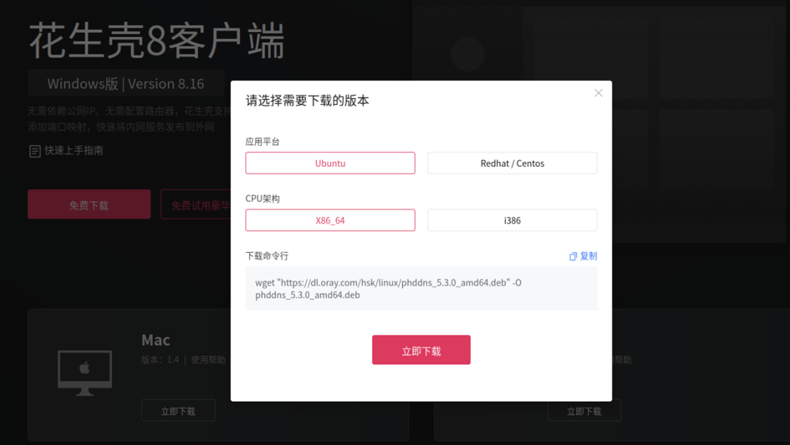

pycharm+花生壳+git深度学习多地办公解决方案
通常情况下我们是在学校或公司的服务器上搭建深度学习环境，然后在自己的工位或者实验室使用个人电脑连接服务器使用其计算资源。个人电脑和服务器通常使用内网连接。那么当我们想要多地办公，比如当我们回到家里或是出差在外的时候仍能访问到我们服务器时，就会面临两个问题：一是如何访问处于校园网内网之下的服务器，二是如何保证所在地不同的设备上的代码版本同步。
这里介绍pycharm+花生壳+git的解决方案。花生壳主要用来进行内网穿透，git用来确保多设备版本同步。
pycharm
pycharm是深度学习领域最常用的编辑器，使用pycharm的ssh功能可以很轻松地实现本地与服务器的同步。这方面网上资料很多，这里就不赘述了。
花生壳
pycharm的ssh功能虽然可以解决本地与服务器端同步的问题，但是ssh连接需要服务器的ip。当我们在校园网内的时候，直接运行命令
1 | |
即可查看服务器的内网ip。使用内网ip可以直接ssh连接服务器。但是这里有两个问题，一是校园网ip动态获取、随时更新使得我们需要频繁手动更新ssh配置，二是当离开校园网环境便无法再连接服务器。
因此需要使用内网穿透技术对服务器ssh端口进行转发。如自行配置内网穿透需要一台拥有固定公网ip的服务器，可以租用各大云服务提供商如阿里云百度云的服务器。这里推荐一步到位直接使用国内贝锐花生壳的内网穿透服务，提供免费域名，访问域名即可访问到处于内网的服务器，方便快捷。（注：这里需要服务器自身是可以访问到外网的）
花生壳官网安装教程https://service.oray.com/question/11630.html
官网下载花生壳客户端
安装客户端，在安装文件所在目录输入
1 | |

浏览器打开花生壳管理页面，登录进入设备列表添加设备

点击设备序号登陆设备之后点击内网穿透添加映射

设置映射参数，其中内网主机ip设为0.0.0.0，端口设为22

花生壳内网穿透配置完成，使用ssh user@域名:端口名 即可登录，其中端口名为花生壳服务端口。
git
使用花生壳可以随时随地连接服务器，但是无法保证多台设备之间数据同步。git作为分布式多人协作版本管理软件可以很好的解决这个问题，以下是使用git进行多地办公时的一些要点
远程仓库的设置
可以使用代码托管平台如github和gitee作为远程仓库，也可以自己在本地建立仓库。注意如果仓库在服务器本地，其他设备需设置远程服务器地址
1
git remote set-url origin ssh://user@域名:端口/git/repo/test/.git其中需要指明仓库所在ip(或者域名)和所在路径
git和pycharm的冲突
由于pycharm会自动上传本地改动到服务器端，因此当本地或者服务器端推送新版本到远程仓库而另一方想要拉取的时候会就出现冲突。这时可以先让其中一方将改动push到远程服务器，然后另一方将当前工作区回退到上一个版本
1
git reset --hard origin/master然后再拉取即可。
git add已追踪的文件。
项目根目录下不仅存放有代码，还可能存放有数据等我们不希望通过git同步的文件。如果使用
git add .则会将工作区所有文件的改动提交到暂存区。如果只想添加已经tracked的文件，则使用命令1
git add -u（训练数据等文件建议使用移动硬盘等设备手动传输）
git使用基本流程
- 创建仓库
git int或git clone - 每次写代码前从远程服务器拉取最新版本
git pull - 添加文件和改动到暂存区
git add - 提交改动
git commit - 将改动推送到远程仓库
git push
- 创建仓库
服务器端和本地同步
由于网络波动等原因，pycharm的自动上传功能并不稳定可靠，常常出现本地和服务器代码不一致的情况。在写代码的过程中可以经常使用pycharm中
工具->部署->与服务器端版本比较选项来确保代码一致，同时也可以使用git来保证版本同步。这里推荐使用git来完成 。推荐每天写完代码或完成重要的功能都进行一次push和pull，以保证代码一致。